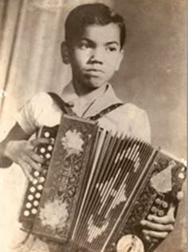
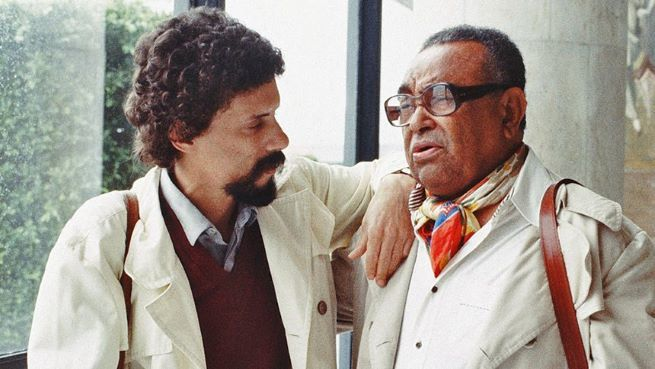

QUEM FOI LUIZ GONZAGA?
Luiz Gonzaga do Nascimento foi um cantor, compositor e músico brasileiro. Por ter sido responsável pela
valorização dos ritmos nordestinos, ficou conhecido como o Rei do
Baião. Ele cantava acompanhado da sua inseparável sanfona e levou o baião, o xaxado, o xote
e o forró para todo o País.
Gonzagão também foi considerado uma das figuras representantes mais importantes e
completas da música popular brasileira. Ao longo da história de Luiz Gonzaga, suas composições tinham
como marca exaltar o sertão nordestino, mas também mostrar a realidade da pobreza, as tristezas e as
injustiças que o povo da região enfrentava.
.webp) Luiz Gonzaga (Representação)
Luiz Gonzaga (Representação)
ONDE NASCEU?
Luiz Gonzaga nasceu no dia 13 de dezembro de 1912, na Fazendo Caiçara, em Exu, sertão de Pernambuco.
Nessa data, o Brasil ainda tem mais um motivo para comemorar. Além de celebrar a história de Luiz
Gonzaga e a trajetória incrível que o Rei do Baião teve, no dia 13 de dezembro é comemorado o
dia nacional do forró.
INFÂNCIA E ADOLESCÊNCIA
Filho de Januário José dos Santos, o mestre Januário, “sanfoneiro de 8 baixos”, e Ana Batista de Jesus,
Luiz Gonzaga teve 7 irmãos. A história de Luiz Gonzaga é marcada pela música. Desde pequeno, ele já
gostava de olhar seu pai tocando sanfona. Logo aprendeu a tocar para animar as festas da sua região. Ele
cresceu ajudando seu pai com as tarefas da na roça e construindo um amor pela sanfona.
Luiz Gonzaga era considerado um protegido do Coronel Manuel Aires de Alencar e de suas filhas. Inclusive
foi com elas que ele aprendeu a escrever, ler e falar corretamente. Com 13 anos, Luiz Gonzaga juntou o
dinheiro que ganhava emprestado do coronel e aproveitou para comprar sua primeira sanfona.
O primeiro dinheiro que Luiz Gonzaga recebeu como músico foi tocando em um casamento. A partir dali, ele
já sabia que seu destino seria a música.

Luiz Gonzaga no pelas ruas (Representação)
CARREIRA
A história de Luiz Gonzaga como músico começou a acontecer em Minas Gerais, quando ele conheceu Domingos
Ambrósio, que era um soldado do exército e também um acordeonista. Nesse encontro, ele foi encorajado a
ganhar dinheiro tocando nas ruas. Então, em 1939, Luiz Gonzaga se despediu do exército na cidade do Rio
de Janeiro e começou a sua experiência como músico se apresentando em zonas de prostituição da região.
Nesse início, ele não cantava, somente fazia solos com o seu acordeão em músicas de estilos que eram
famosos na época. Nas apresentações, ele usava um figurino particular: paletó e gravata, com o intuito
de ser visto como um músico profissional.
Em 1940, um grupo de estudantes cearenses, que estudavam no Rio de Janeiro, aconselhou Luiz Gonzaga a
mudar o estilo de suas apresentações e tocar as músicas dos sanfoneiros do sertão nordestino, já que com
o repertório que ele estava acostumado não estava conseguindo vencer os concursos.
Então, ao participar de um programa de calouros da rádio tocando Vira e Mexe, ele ganhou nota 5
e o prêmio de primeiro lugar. A partir daí, a história de Luiz Gonzaga ganha um novo capítulo e sua
carreira começa oficialmente em 1945.
Nesse ano, Luiz Gonzaga entrou no estúdio da RCA para gravar Dança Mariquinha, ao lado de Saulo
Augusto Silveira Oliveira. Ele se saiu tão bem que foi convidado pelo diretor artístico da gravadora
para gravar um disco. Ao longo da história de Luiz Gonzaga, ele lançou músicas com versos simples e
marcantes, impregnando as expressões e o sotaque nordestino em suas canções.
FAMÍLIA
Luiz Gonzaga teve um relacionamento com a cantora e dançarina Odaléia Guedes dos Santos. Em 1945, desse
relacionamento, nasceu Luiz Gonzaga do Nascimento Júnior, que ficou órfão de mãe com dois anos de idade.

Luiz Gonzaga no pelas ruas (Representação)
Em 1948, Luiz Gonzaga casou-se com a pernambucana Helena Neves Cavalcanti e juntos, criaram Gonzaguinha e
adotaram a menina Rosa Gonzaga.
MORTE
Luiz Gonzaga lutou durante seis anos contra um câncer de próstata. No dia 21 de junho de 1989, foi
internado no Recife, Pernambuco, no Hospital Santa Joana, já bastante debilitado. No dia 2 de agosto de
1989 faleceu vítima de uma parada cardíaca.
Em 2012, quando se comemorou 100 anos do nascimento de Luiz Gonzaga, foi lançado o filme "De Pai Para
Filho", narrando a relação conflituosa entre Gonzaga e Gonzaguinha. O artista recebeu várias homenagens
em todo o país.
LUIZ GONZAGA E A MÚSICA NORDESTINA
Através da carreira e da história de Luiz Gonzaga, a música nordestina ficou conhecida e reconhecida por
todos os cantos do nosso País. Além de influenciar musicalmente outros artistas de diferentes gerações,
o compositor fez ritmos como o baião, o xaxado e o forró pé de serra serem valorizados nas outras
regiões.
Apesar da sua relação com a música não se restringir aos ritmos nordestinos, Luiz Gonzaga foi importante
para que tais estilos musicais fossem vistos como fundamentais para a cultura do Nordeste e do Brasil.
A música nordestina traz as características de um povo singular que mistura diferentes ritmos, cores,
expressões e é sinônimo de miscigenações culturais. O objetivo da carreira e da história de Luiz Gonzaga
era mostrar por meio da música a riqueza da região e também a dura realidade que o povo do sertão
nordestino enfrenta.